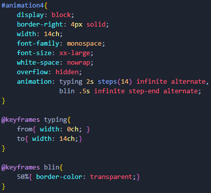
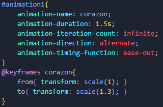
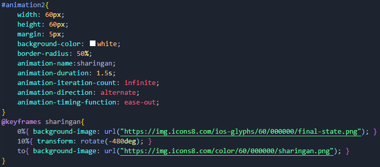
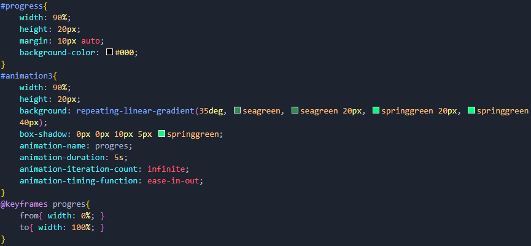

Animaciones
Las animaciones CSS permiten animar transiciones de una configuración de estilo CSS a otra. Las animaciones constan de dos componentes, un estilo que describe la animación CSS y un conjunto de fotogramas clave que indican los estados inicial y final del estilo de la animación, así como los posibles puntos intermedios.
Para crear una secuencia de animación CSS, se aplica el estilo al elemento que se desea animar con la propiedad animation y sus sub-propiedades. Con ellas es posible no solo configurar el ritmo y la duración de la animación sino otros detalles sobre la secuencia de la animación. Con ellas no se configura la apariencia actual de la animación, para ello esta la regla @keyframes.
Sub-propiedades:
| Propiedad | Valor | Descripción |
|---|---|---|
| animation-name | Nombre de la regla @keyframes que describe los fotogramas de la animación. | @keyframes: Se definen como una regla independiente, primero @keyframes seguido de un espacio y el nombre de la animación que sera el valor de animation-name. Dentro se definen los keyframes que controlaran el flujo de la animación, esto mediante % para indicar en qué momento de la secuencia de la animación tiene lugar. 0% es el principio, 100% es el estado final de la animación. Es importante especificar estos dos momentos para que el navegador sepa dónde debe comenzar y finalizar; debido a su importancias, estos dos momentos tienen palabras clave: from y to. |
| animation-duration | Valor en segundos. | Indica la cantidad de tiempo que la animación consume en completar su ciclo. |
| animation-iteration-count | Valor numérico o infinte. | Por defecto, la animación se ejecuta una sola vez al cargar la página, pero con esta propiedad se puede especificar el número de veces que se repite. Tambien se puede indicar infinite para repetir la animación indefinidamente. |
| animation-direction | normal | Valor por defecto, inicia en el 0% y termina en el 100%, esto hace que si se repite la animación, esta empiece de golpe. |
| reverse | Cada ciclo de la animación se reproduce al revés. Cada vez que comienza un ciclo de animación, ésta se posiciona en el estado final y comienza desde ahí. | |
| alternate | La animación, al terminar un ciclo, invierte su dirección. Es decir, los pasos de la animación se ejecutan al revés. Además, las funciones de tiempo también se invierten; por ejemplo una animación ease-in se convierte en una animación con ease-out cuando se reproduce al revés. | |
| alternate-reverse | Es similar a alternate pero la animación se reproduce al revés. Es decir la animación se posiciona en el estado final, comienza a reproducirse al reves y, cuando llega al inicio vuelve a reproducirse de forma normal hasta llegar al final de la secuencia. | |
| animation-fill-mode | none | Valor por defecto.La animación no aplicará los estilos antes ni después de su ejecución. |
| forwards | El objeto sobre el que se aplica la animación quedará con los valores y estilos que le aplique el último keyframe de la ejecución de la animación. El último valor dependerá del valor de animation-direction y animation-iteration-count. | |
| backwards | La animación aplicará los valores definidos en el primer keyframe tan pronto como se aplique al objeto, y los retendrá durante el tiempo de animation-delay. El primer keyframe dependerá del valor de animation-direction. | |
| both | La animación seguirá las reglas de las opciones forwards y backwards, extendiendo las propiedades de la animación en ambas direcciones. | |
| animation-delay | Valor en segundos. | Tiempo de retardo entre el momento en que el elemento se carga y el comienzo de la secuencia de la animación. |
| animation-timing-function | linear | Se realiza a una tasa constante de principio a fin. |
| ease | Comienza lentamente, acelera bruscamente y luego se ralentiza gradualmente hacia el final. Es similar a ease-in-out, aunque acelera más bruscamente al principio. Es el valor por defecto. | |
| ease-in | Comienza lentamente y luego se acelera progresivamente hasta el final, momento en el que se detiene abruptamente. | |
| ease-in-out | Comienza lentamente, se acelera y luego se ralentiza hacia el final. Al principio, se comporta como la función ease-in; al final, es como la función ease-out | |
| ease-out | Comienza abruptamente y luego se ralentiza progresivamente hacia el final. | |
| animation-play-state | running | La animación se está ejecutando. |
| paused | La animación está pausada. |
Ejemplos:




Hola mundo...